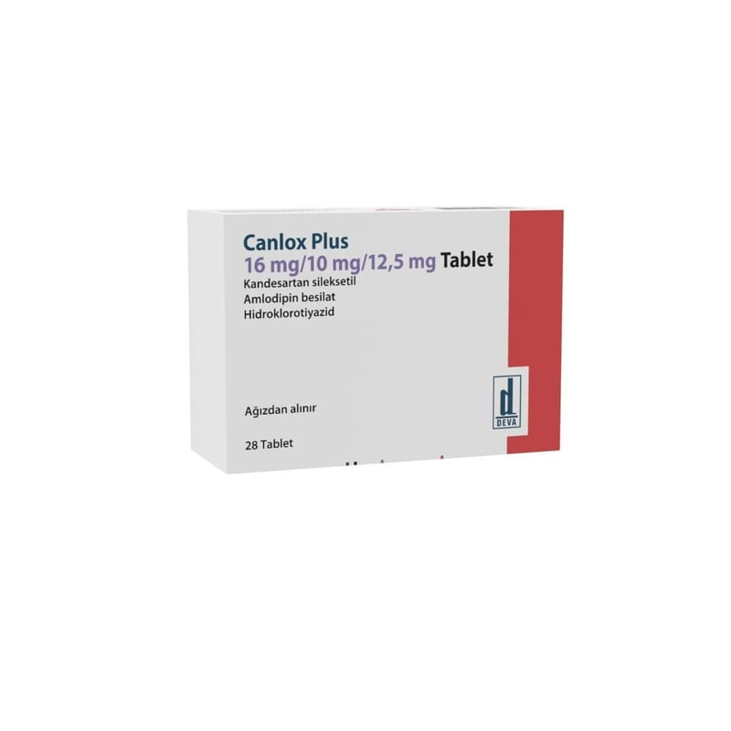

Canlox Plus 16 mg/10 mg/12.5 mg Tablet, 28 Adet

Ne için kullanılır
KT · Bölüm 1İlacınızın ismi CANLOX PLUS’tır ve 28 tabletlik ambalajlarda pazarlanmaktadır. Her bir tablet 16 mg kandesartan sileksetil, 10 mg amlodipine eş değer 13,87 mg amlodipin besilat ve 12,5 mg hidroklorotiyazid içerir.
CANLOX PLUS yüksek kan basıncının tedavisinde kullanılmaktadır (hipertansiyon tedavisinde). Üç adet etken madde içermektedir: Kandesartan sileksetil, amlodipin ve hidroklorotiyazid. Bu üç etken madde kan basıncınızın düşürülmesinde birlikte rol almaktadırlar.
• Kandesartan sileksetil, “anjiyotensin II reseptör antagonisti” adı verilen bir ilaç grubuna aittir. Kan damarlarınızı gevşetmekte ve genişletmektedir. Bu da kan basıncınızın düşmesine yardımcı olmaktadır.
• Hidroklorotiyazid, “diüretikler” (idrar söktürücüler) adı verilen bir ilaç grubuna aittir. Vücudunuzdan suyun ve sodyum gibi tuzların idrar ile uzaklaştırılmasına yardımcı olur. Bu da kan basıncınızın düşmesini sağlar. • Amlodipin, kalsiyum kanal blokerleri sınıfına ait bir maddedir. Damar düz kas hücrelerinin kalsiyum kanallarını bloke eder; bu da, kan damarlarının kasılmasını önler.
Doktorunuz CANLOX PLUS’ı, kan basıncınızın tek başına kandesartan, amlodipin veya kandesartan/amlodipin kombinasyonu ile düşürülemediği durumlarda reçete edebilir.